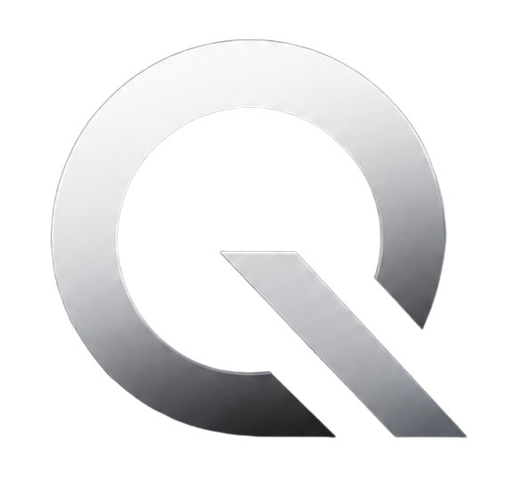

QIROX StudioProject workspace
غزال
A focused digital experience designed and delivered by QIROX Studio.
العميل / Client
غزال
الجمهور / Audience
Project customers and their teams
التقنيات / Stack
To be confirmed
نطاق المشروع / Project scope
- ✓تفاصيل المشروع قيد الإعداد
مسار التنفيذ / Delivery path
1مراجعة الفكرة والمتطلبات
2تصميم الواجهة وبناء النسخة الأولى
3اختبار وتجهيز التسليم